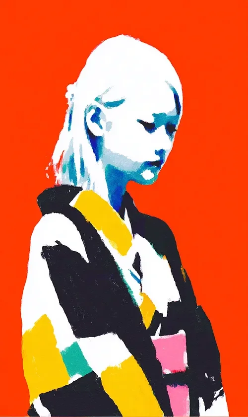

카운터 위에 그녀가 코트를 걸친 게 아니었다. 코트가 그녀를 걸치고 있었다. 노랑, 검정, 청록의 색면들, 각각의 색은 벨라가 끝내 갖지 못한 방식으로 자기 자신에 대해 확신하고 있었다. 그녀는 언제 들어왔는지 기억도 나지 않는 가게 카운터 앞에 서서 고개를 숙이고 있었다. 그녀의 머리카락은 온기 없는 태양에 바랜 무언가의 흰색이었다.
The coat wore her, not the other way around. Blocks of yellow, black, and teal, each color certain of itself in ways Vela never managed. She stood at the counter of the shop she no longer remembered entering, head bowed, her hair the white of something bleached by a sun that gave no warmth.
그녀의 등 뒤에서, 붉음이 깊어졌다.
Behind her, the red deepened.